Skip to content
Électroniques
Maison
Beauté
Santé
Cuisine
Outils
Sports
Jouets
Bébés
Mode
Extérieur
Animaux
Jeux Vidéos
Livres
Rechercher :
Électroniques
Maison
Beauté
Santé
Cuisine
Outils
Sports
Jouets
Bébés
Mode
Extérieur
Animaux
Jeux Vidéos
Livres
Rechercher :
Rechercher :
Accueil
>
Électroniques
Électroniques
Hisense C1 – Test et avis
P10 Lite – test et avis
Maxtor – Test et avis
Acer Liquid Z6 – Test et avis
Montre Andreas Osten – Test et avis
Cowin E7 – Test et avis
Lenovo Yoga 300-11 – Test et avis
Eken H9 – Test et avis
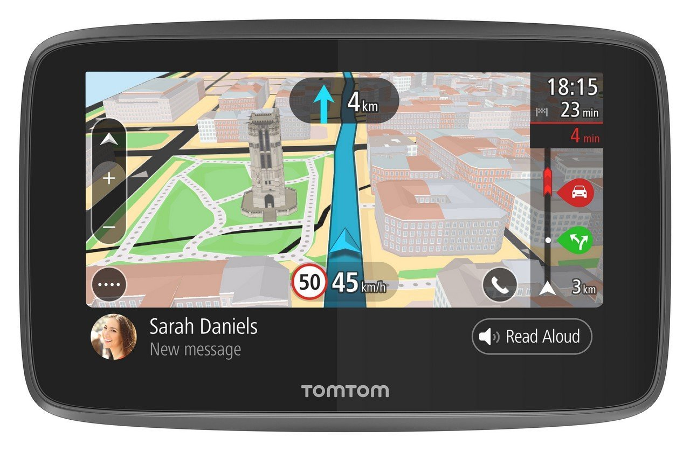
Tomtom Go 5200 – Test et avis
Epson XP 247 – Test et avis
Danew Konnect 501 – Test et avis
Meizu M5 – Test et avis
Galaxy A7 – Test et avis
Dirt Devil Fusion M611 – Test et avis
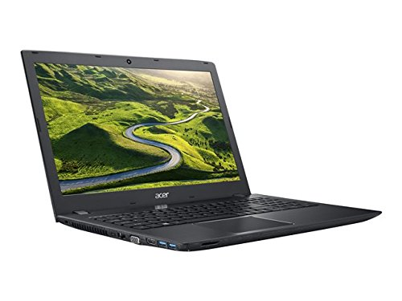
Acer Aspire Es 15 – Test et avis
Archos 50 Saphir – Test et avis
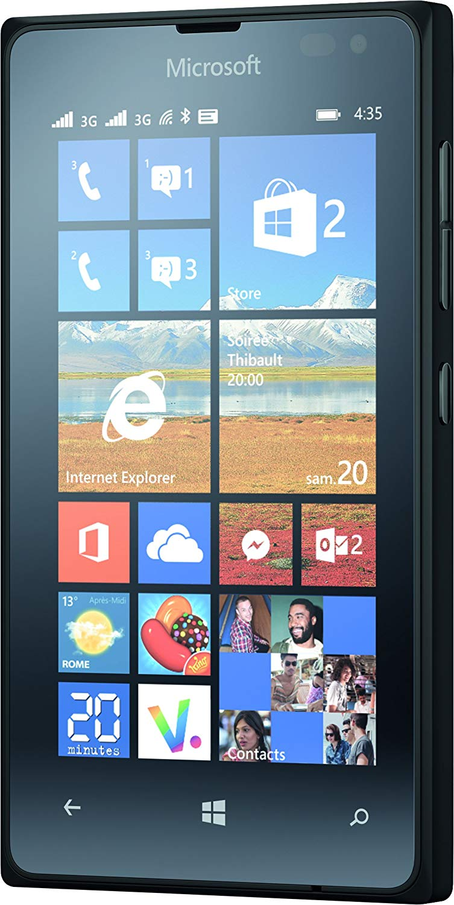
Nokia Lumia 435 – Test et avis
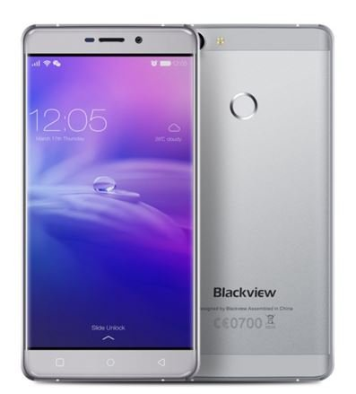
Blackview R7 – Test et avis
Nomu S10 – Test et avis
Dell Latitude E6410 – Test et avis
Nikon Coolpix S2900 – Test et avis
Nikon S33 – Test et avis
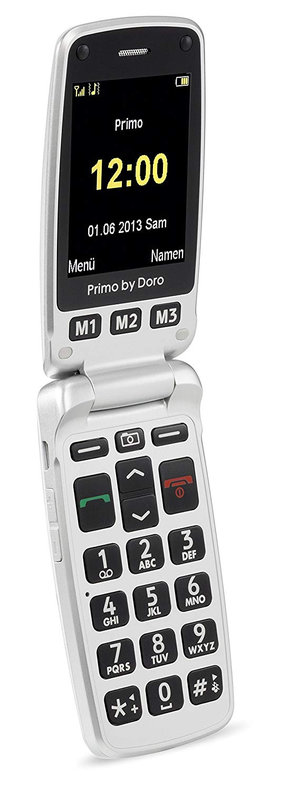
Doro Primo 413 – Test et avis
Nikon Coolpix S9900 – Test et avis
Husqvarna 135 – Test et avis
Epson XP 442 – Test et avis
Sony DSC H400 – Test et avis
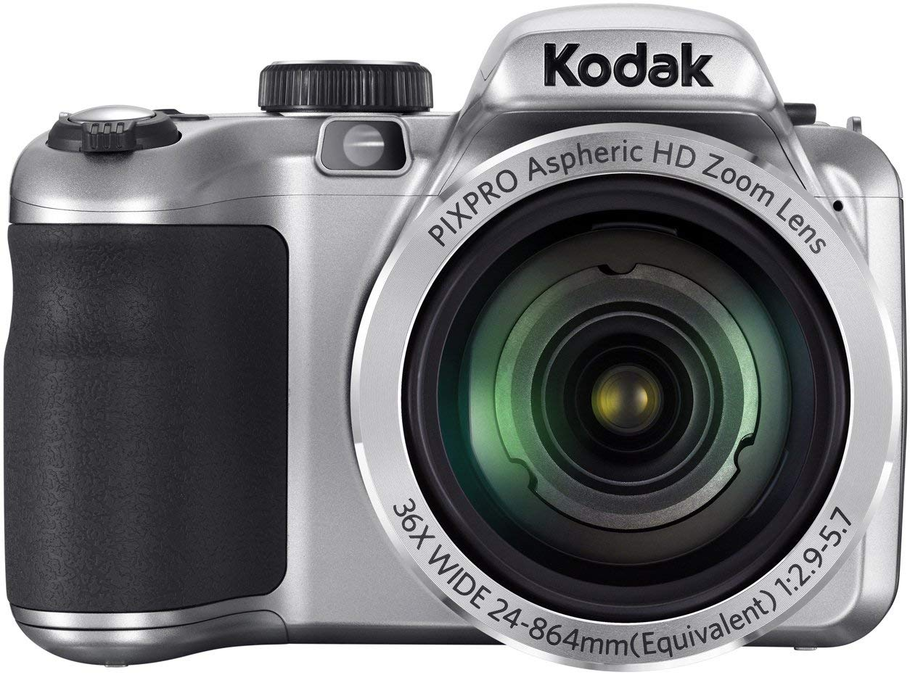
Kodak AZ361 – Test et avis
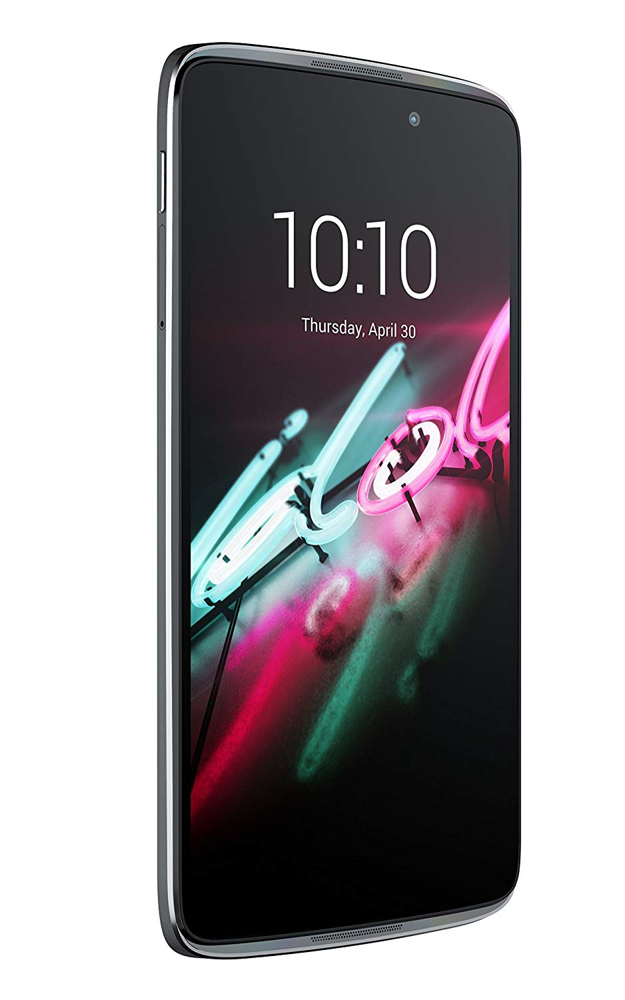
Alcatel Idol 3 – Test et avis
Dyson DC45 – Test et avis
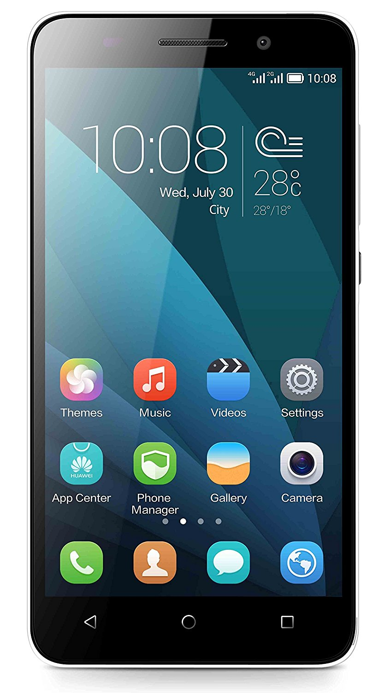
Honor 4X – Test et avis
Gooweel M3 – Test et avis
Nikon Coolpix A10 – Test et avis
Brother CS10 – Test et avis
Lenovo Thinkpad T420 – Test et avis
Harman Kardon Onyx Studio 3 – Test et avis
Amibot Pure H2o – Test et avis
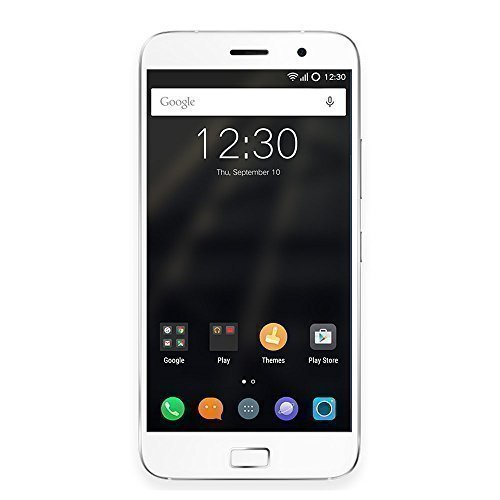
Zuk Z1 – Test et avis
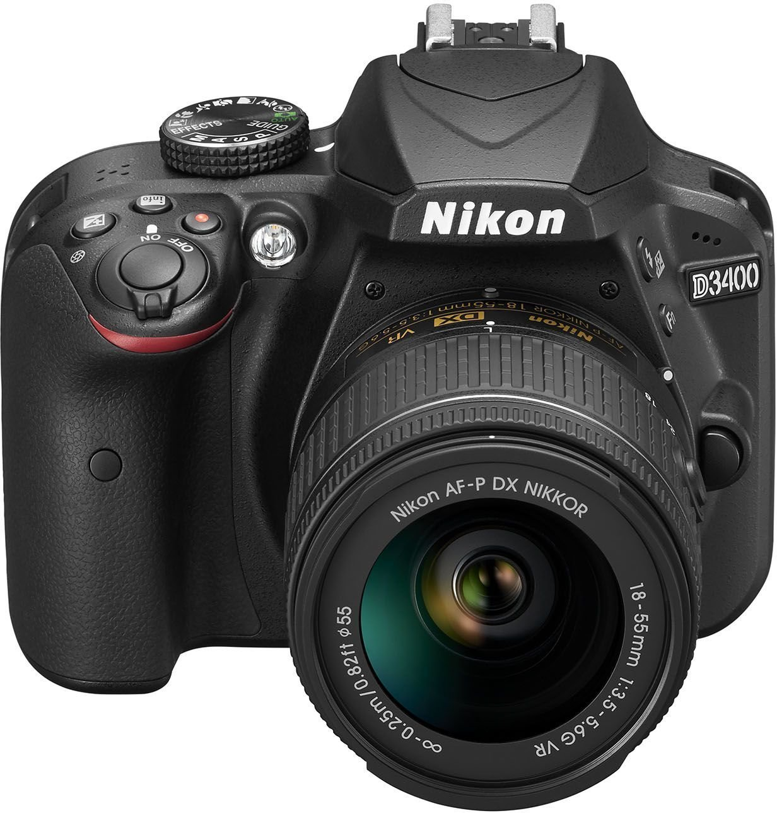
Nikon D3400 – Test et avis
Epson Workforce WF-7620dtwf – Test et avis
Crosscall Spider X1 – Test et avis
Nikon Coolpix A100 – Test et avis
Elephone S7 – Test et avis
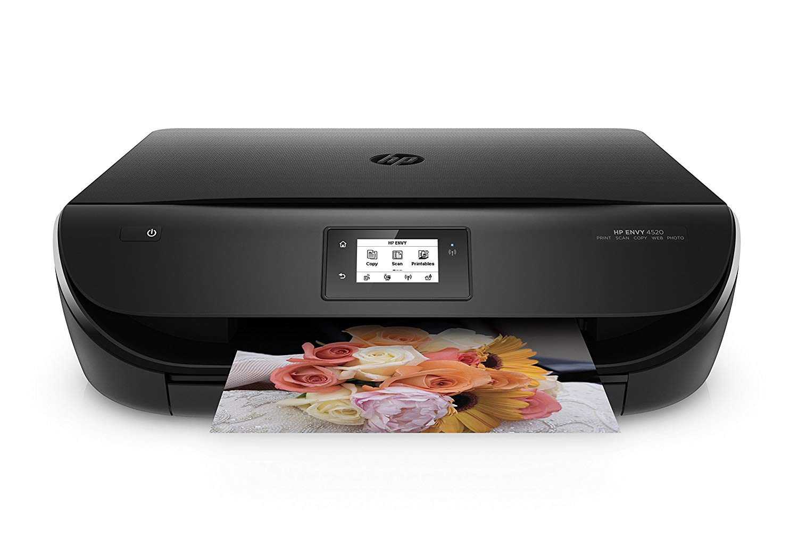
HP Envy 4524 – Test et avis
Sensorwake – Test et avis
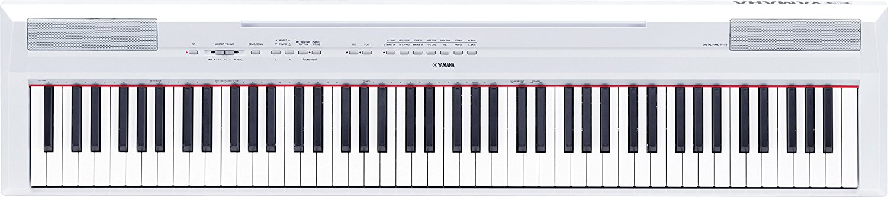
Yamaha P 115 – Test et avis
ZTE Blade V7 Lite – Test et avis
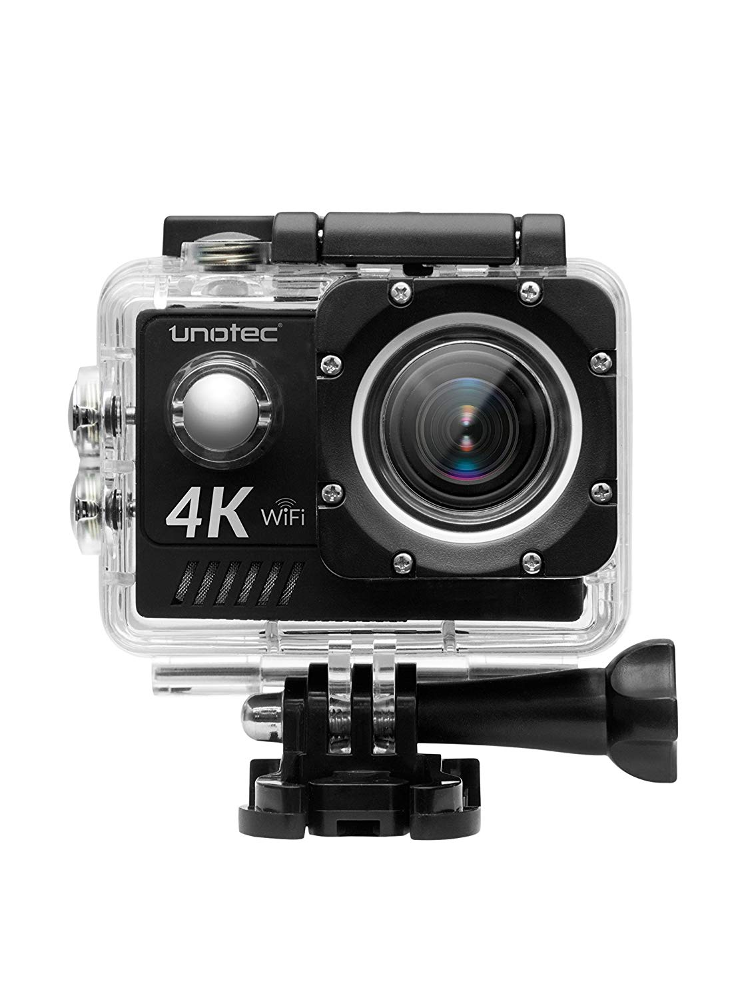
Unotec XTR Pro 4 – Test et avis
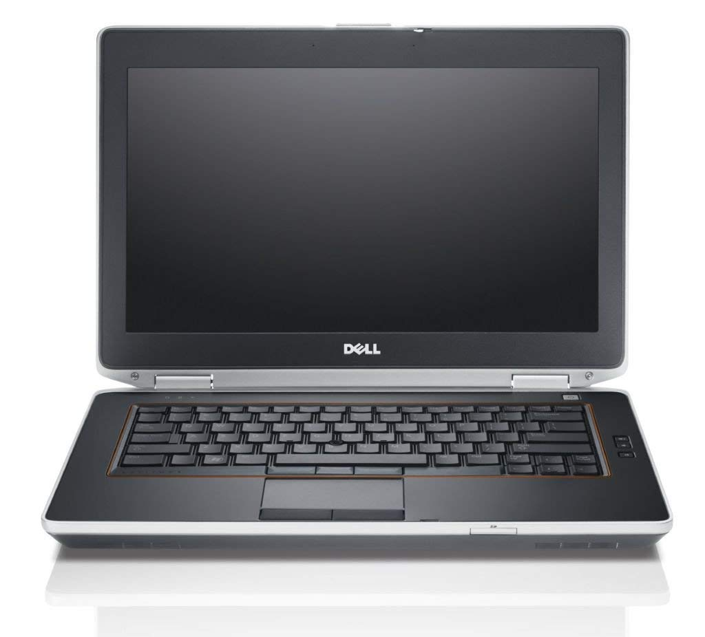
Dell Latitude E6420 – Test et avis
Canon Powershot SX720 HS – Test et avis
HP Stream 13 – Test et avis
Intel Atom Z3735F – Test et avis
Meizu Pro 6 – Test et avis
Moto G5 – Test et avis
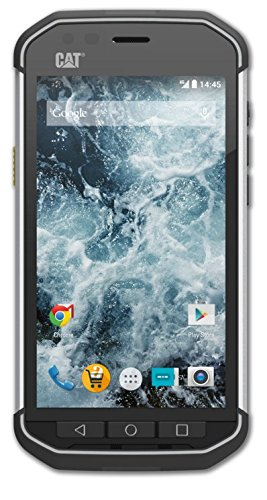
Cat S40 – Test et avis
Epson Xp 540 – Test et avis
Dell Vostro 3558 – Test et avis
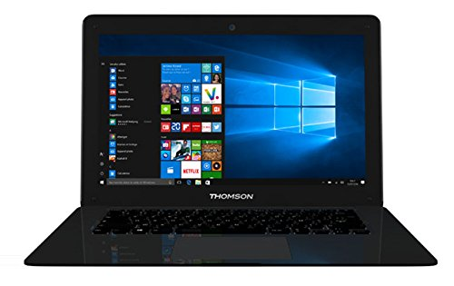
Thomson Neo14 – Test et avis
Polar A300 – Test et avis
Lenovo B – Test et avis
Asus E200ha – Test et avis
Canon MG4250 – Test et avis
Xperia X Compact – Test et avis
Canon Powershot SX410 IS – Test et avis
Motorola Moto E 4G – Test et avis
Tablette Archos 101E Neon – Test et avis
Baofeng UV-5R – Test et avis
Hp Deskjet 3720 – Test et avis
Hp Envy 5540 – Test et avis
Nikon D500 – Test et avis
Oukitel U7 Plus – Test et avis
Janome Milady 41 – Test et avis
Montre Tissot – Test et avis
Logicom L-Ement 505 – Test et avis
HP Omen – Test et avis
Honor 6X Pro – Test et avis
Htc One M9 – Test et avis
Rowenta Air Force 360 – Test et avis
Oukitel K6000 Pro – Test et avis
Singer Smart 2 – Test et avis
Alcatel A3 – Test et avis
Wiko Ridge – Test et avis
Chuwi Hi12 – Test et avis
Zefit 3 – Test et avis
Wileyfox Swift – Test et avis
Gtx 1050 – Test et avis
Vidaxl Fr – Test et avis
Canon Ixus 177 – Test et avis
Tablette Thomson – Test et avis
Doogee X5 Pro – Test et avis
Padgene Smartphone – Test et avis
Canon MG 3650 – Test et avis
Crosscall Odyssey S1 – Test et avis
LG K8 4G – Test et avis
HTC U Play – Test et avis
Epson Ecotank – Test et avis
HP Envy 4521 – Test et avis
Tectectec Xpro2 – Test et avis
TV Akai – Test et avis